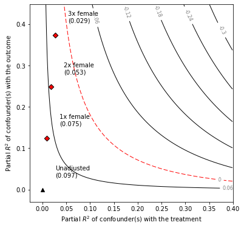

Contents
Table of Contents
# Imports
from sensemakr import sensemakr
from sensemakr import sensitivity_stats
from sensemakr import bias_functions
from sensemakr import ovb_bounds
from sensemakr import ovb_plots
import statsmodels.api as sm
import statsmodels.formula.api as smf
import numpy as np
import pandas as pd
---------------------------------------------------------------------------
ModuleNotFoundError Traceback (most recent call last)
Input In [1], in <cell line: 2>()
1 # Imports
----> 2 from sensemakr import sensemakr
3 from sensemakr import sensitivity_stats
4 from sensemakr import bias_functions
ModuleNotFoundError: No module named 'sensemakr'
%load_ext autoreload
%autoreload 2
# loads data
darfur = pd.read_csv("../data/darfur.csv")
darfur.head()
| wouldvote | peacefactor | peace_formerenemies | peace_jjindiv | peace_jjtribes | gos_soldier_execute | directlyharmed | age | farmer_dar | herder_dar | pastvoted | hhsize_darfur | village | female | |
|---|---|---|---|---|---|---|---|---|---|---|---|---|---|---|
| 0 | 0 | 1.000000 | 1 | 1 | 1 | 0 | 0 | 30 | 0 | 0 | 1 | 23 | Abdel Khair | 0 |
| 1 | 0 | 0.706831 | 0 | 1 | 1 | 0 | 0 | 20 | 1 | 0 | 1 | 5 | Abdi Dar | 1 |
| 2 | 1 | 0.000000 | 0 | 0 | 0 | 1 | 0 | 45 | 1 | 0 | 0 | 15 | Abu Sorog | 0 |
| 3 | 1 | 0.495178 | 1 | 0 | 0 | 0 | 1 | 55 | 0 | 0 | 0 | 9 | Abu Dejaj | 0 |
| 4 | 0 | 0.000000 | 0 | 0 | 0 | 1 | 1 | 25 | 1 | 0 | 1 | 7 | Abu Dejaj | 1 |
# runs regression model
reg_model = smf.ols(formula='peacefactor ~ directlyharmed + age + farmer_dar + herder_dar + '\
'pastvoted + hhsize_darfur + female + village', data=darfur)
model = reg_model.fit()
# Define parameters for sensemakr
treatment = "directlyharmed"
q = 1.0
alpha = 0.25
reduce = True
benchmark_covariates=["female"]
kd = [1, 2, 3]
ky = kd
# Create a sensemakr object and print summary of results
s = sensemakr.Sensemakr(model, treatment, q=q, alpha=alpha, reduce=reduce, benchmark_covariates=benchmark_covariates, kd=kd)
s.summary()
Sensitivity Analysis to Unobserved Confounding
Model Formula: peacefactor ~ Intercept + village[T.Abdi Dar] + village[T.Abu Dejaj] + village[T.Abu Gamra] + village[T.Abu Gawar] + village[T.Abu Geran] + village[T.Abu Jidad] + village[T.Abu Lihya] + village[T.Abu Mugu] + village[T.Abu Shouka] + village[T.Abu Sorog] + village[T.Abune] + village[T.Adar] + village[T.Agadier] + village[T.Agudna] + village[T.Agumi] + village[T.Aid Alkhair] + village[T.Airgy] + village[T.Aish Barra] + village[T.Ajayana] + village[T.Ajiji] + village[T.Akomi] + village[T.Al Gedisa] + village[T.Al Geneina] + village[T.Allah Forga] + village[T.Almetrabia] + village[T.Am Baro] + village[T.Am Dalal] + village[T.Am Dariro] + village[T.Am Dukhn] + village[T.Am Jarad] + village[T.Am Jemma] + village[T.Am Kharouba] + village[T.Amar] + village[T.Amdukhn] + village[T.Andabook] + village[T.Anderola] + village[T.Andita] + village[T.Anjilati] + village[T.Anjokati] + village[T.Aorda] + village[T.Aradeeba] + village[T.Arara] + village[T.Argote] + village[T.Argoy] + village[T.Arimba] + village[T.Armi] + village[T.Arola] + village[T.Aroom] + village[T.Arsa] + village[T.Arsaliya] + village[T.Asirni] + village[T.Ata] + village[T.Aurab] + village[T.AwSanga] + village[T.Awrish] + village[T.Badaria] + village[T.Bajourba] + village[T.Bakjo] + village[T.Baldi] + village[T.Bandis] + village[T.Bango] + village[T.Baranga] + village[T.Bardia] + village[T.Bare] + village[T.Barkhalla] + village[T.Basaw] + village[T.Beero] + village[T.Beida] + village[T.Beir Saliba] + village[T.Berdia] + village[T.Bertabid] + village[T.Bida Alginina] + village[T.Bidigy] + village[T.Bidt Faraga] + village[T.Bier Saliba] + village[T.Biera] + village[T.Bigaga] + village[T.Binary Mbila] + village[T.Bindis] + village[T.Binediyah] + village[T.Biot Mofarag] + village[T.Bir Tabat] + village[T.Birdeya] + village[T.Bireiga] + village[T.Birgy] + village[T.Birhaliba] + village[T.Birtabit] + village[T.Bla Al Biyya] + village[T.Boba] + village[T.Boranga] + village[T.Borat] + village[T.Borgio] + village[T.Boymawang] + village[T.Brega] + village[T.Bukar] + village[T.Coda Mee] + village[T.Congi] + village[T.Dabaky] + village[T.Dabis] + village[T.Dagjor] + village[T.Dalta] + village[T.Damra] + village[T.Dangojaro] + village[T.Danko] + village[T.Dardure] + village[T.Dargily] + village[T.Dasa] + village[T.Deegada] + village[T.Deero] + village[T.Dengar] + village[T.Derenda] + village[T.Derisa] + village[T.Dinbo Kabdi] + village[T.Dingajour] + village[T.Dinjir] + village[T.Dirdkna] + village[T.Dirgily] + village[T.Diria] + village[T.Dirisa] + village[T.Diro] + village[T.Dofata] + village[T.Dongita] + village[T.Doty] + village[T.Doudata] + village[T.Driol] + village[T.Dunjurou] + village[T.Eid Elkhair] + village[T.Eish Bida] + village[T.El Fasher] + village[T.Fanginta] + village[T.Farne] + village[T.Few] + village[T.Fokdo] + village[T.Fondlayat] + village[T.Fonu] + village[T.Fur Baranga] + village[T.Fur Barenga] + village[T.FuraWiya] + village[T.Furawiya] + village[T.Furo] + village[T.Gadir] + village[T.Galala] + village[T.Garady] + village[T.Garsila] + village[T.Gasheeb] + village[T.Gasimba] + village[T.Gasmina] + village[T.Gebeesh] + village[T.Gedernii] + village[T.Gemana] + village[T.Gemena] + village[T.Ghibish] + village[T.Ghoz Doggy] + village[T.Ginfara] + village[T.Girgida] + village[T.Gobi] + village[T.Godambi] + village[T.Gogar] + village[T.Goji] + village[T.Gondilat] + village[T.Gono] + village[T.Goraba] + village[T.Gorboki] + village[T.Goroku] + village[T.Gosimba] + village[T.Goslayat] + village[T.Gouba] + village[T.Goz Bagar] + village[T.Goz Beida] + village[T.Goz Deega] + village[T.Goz Gabor] + village[T.Goz Mono] + village[T.Gttara] + village[T.Gubbey] + village[T.Habila] + village[T.Habshaba] + village[T.Hadjer Suleiman] + village[T.Hai Jadid] + village[T.Hajar Kharkhita] + village[T.Hajar Seleman] + village[T.Hajar farkhabta] + village[T.Hajilija] + village[T.Haleila] + village[T.Hara] + village[T.Harkow] + village[T.Hashaba] + village[T.Haskanita] + village[T.Hee Al Gameena] + village[T.Heemada] + village[T.Hijileja] + village[T.Hila Haraz] + village[T.Hila Jadad] + village[T.Hila Kaid] + village[T.Hila Mara] + village[T.Hila Zaghawa] + village[T.Hilaila] + village[T.Humeida] + village[T.Hunu] + village[T.Hyja Gergeta] + village[T.Id Al Kheir] + village[T.Jadara] + village[T.Jago] + village[T.Jaker] + village[T.Jala] + village[T.Jamti] + village[T.Janga] + village[T.Jarko] + village[T.Jebel] + village[T.Jebel Amr] + village[T.Jebel Jozo] + village[T.Jebel Moon] + village[T.Jeerjeera] + village[T.Jendaly] + village[T.Jereko] + village[T.Jimi] + village[T.Jirjira] + village[T.Jo Yat] + village[T.Jorbi] + village[T.Jorbogy] + village[T.Joyo] + village[T.Jozdo] + village[T.Jumaira] + village[T.Jurjura] + village[T.Kabar] + village[T.Kaberka] + village[T.Kabkabia] + village[T.Kabugo] + village[T.Kadia] + village[T.Kadomi] + village[T.Kadora] + village[T.Kagio] + village[T.Kagu] + village[T.Kagy Mangy] + village[T.Kahra] + village[T.Kair] + village[T.Kajabara] + village[T.Kajawa] + village[T.Kajra] + village[T.Kalkig] + village[T.Kaltouma] + village[T.Kamo] + village[T.Kanda indina] + village[T.Kandaly] + village[T.Kandaro] + village[T.Kaneya] + village[T.Kanour] + village[T.Kapar] + village[T.Kar Simba] + village[T.Karbanga] + village[T.Kareye] + village[T.Karia] + village[T.Karja] + village[T.Karnita] + village[T.Karnuwa] + village[T.Kary] + village[T.Kashkash] + village[T.Kasia] + village[T.Kati] + village[T.Kawayna] + village[T.Kaya] + village[T.Kayo] + village[T.Kdumli] + village[T.Keajo] + village[T.Keiga] + village[T.Kengu] + village[T.Kesi] + village[T.Khabeesh] + village[T.Khabir Waja] + village[T.Kharsha] + village[T.Khary] + village[T.Khazan Abu Jidad] + village[T.Khazan Urshe] + village[T.Khibish] + village[T.Khosa] + village[T.Khurbaranga] + village[T.Kibiry] + village[T.Kibjo] + village[T.Kiego] + village[T.Kigulu] + village[T.Kigy] + village[T.Kinding] + village[T.Kirti] + village[T.Kobar] + village[T.Kobsaka] + village[T.Kodima] + village[T.Kogi] + village[T.Kojong Kasia] + village[T.Kokona] + village[T.Kondobe] + village[T.Kongo] + village[T.Kongo Hazara] + village[T.Kooba] + village[T.Korika] + village[T.Kormi] + village[T.Kornoy] + village[T.Koro] + village[T.Kotoya] + village[T.Kougounagour] + village[T.Kourja] + village[T.Kowaya] + village[T.Kubrey Joumta] + village[T.Kulbus] + village[T.Kutum] + village[T.Kuwayna] + village[T.Lamboot] + village[T.Leebanda] + village[T.Lesh Baha] + village[T.Liya] + village[T.Loba] + village[T.Loombon] + village[T.Luka] + village[T.MANGO-BRAD] + village[T.Mabganou] + village[T.Mabjer] + village[T.Mabrouka] + village[T.Madeina] + village[T.Magarsa] + village[T.Magna] + village[T.Mago] + village[T.Magrani] + village[T.Mahajiria] + village[T.Majar Kabdi] + village[T.Majmaje] + village[T.Makada] + village[T.Makhn] + village[T.Mangarsa] + village[T.Mangora] + village[T.Mangroa] + village[T.Manjar] + village[T.Mardaf] + village[T.Marmata] + village[T.Marmro] + village[T.Matereh] + village[T.Matjar] + village[T.Miary] + village[T.Mieramta] + village[T.Miermier] + village[T.Mila] + village[T.Mirna] + village[T.Misky] + village[T.Misteri] + village[T.Mngao] + village[T.Mobroka] + village[T.Mogun] + village[T.Mokjar] + village[T.Moma] + village[T.Mon mountain] + village[T.Monjar] + village[T.Morkai] + village[T.Morley] + village[T.Mornei] + village[T.Motofoka] + village[T.Mudaima] + village[T.Mujmaja] + village[T.Mutia] + village[T.Nagenbe] + village[T.Nagurma] + village[T.Najid Girgita] + village[T.Nareema] + village[T.Nirtati] + village[T.Nouaya] + village[T.Om Diring] + village[T.Om Dohkon] + village[T.Om Dokhon] + village[T.Om Dorabero] + village[T.Om Drisai] + village[T.Om Gesha] + village[T.Om Kharuba] + village[T.Orshi Dam] + village[T.Orum] + village[T.Oshishi] + village[T.Osore] + village[T.Ostani] + village[T.Oyor] + village[T.Qarbar] + village[T.Qookus] + village[T.Rafeda] + village[T.Rahad Katraya] + village[T.Rakasia] + village[T.Ramakaya] + village[T.Ras Feel] + village[T.Ras Tor] + village[T.Rayu Ghanam] + village[T.Rofida] + village[T.Sabaa] + village[T.Sabarna] + village[T.Sadiga] + village[T.Saki] + village[T.Sakundje] + village[T.Sakutagee] + village[T.Salbe] + village[T.Saldi] + village[T.Sandokdo] + village[T.Sarb] + village[T.Sari] + village[T.Saritia] + village[T.Sawni] + village[T.Sawya] + village[T.Seened] + village[T.Seesee] + village[T.Seline] + village[T.Sereha] + village[T.Shagiya] + village[T.Shajar] + village[T.Shalal] + village[T.Shetia] + village[T.Shilga] + village[T.Shoshte] + village[T.Silba] + village[T.Sildee] + village[T.Silea] + village[T.Simk Kidik] + village[T.Sir] + village[T.Sir Khala] + village[T.Sirba] + village[T.Solobia] + village[T.Suwaney] + village[T.Tabaldia] + village[T.Tadkini] + village[T.Tagajru] + village[T.Tai Kanga] + village[T.Talga] + village[T.Tandi Karo] + village[T.Tandosa] + village[T.Tanga] + village[T.Tarbeba] + village[T.Targata] + village[T.Tarlabeet] + village[T.Tarlety] + village[T.Teberia] + village[T.Tere] + village[T.Terti] + village[T.Tina] + village[T.Tindosia] + village[T.Tinko] + village[T.Todobay] + village[T.Todusa] + village[T.Tolos] + village[T.Tondobay] + village[T.Tonogo] + village[T.Tor Hilla Bardi] + village[T.Torgono] + village[T.Tribaba] + village[T.Tukul Tukul] + village[T.Tumbuka] + village[T.Tundobaya] + village[T.Tundosa] + village[T.Tunuko] + village[T.Tweng] + village[T.Um Aruba] + village[T.Um Baro] + village[T.Um Chouch] + village[T.Um Darabairu] + village[T.Um Darabiru] + village[T.Um Deriwa] + village[T.Um Dorbiro] + village[T.Um Drisa] + village[T.Um Gabeera] + village[T.Um Haruba] + village[T.Um Horoba] + village[T.Um Kharouba] + village[T.Um Kheir] + village[T.Um Khorba] + village[T.Um Majara] + village[T.Um Roam] + village[T.Um Shegera] + village[T.Um Yuuyra] + village[T.Urdee] + village[T.Urum] + village[T.Usri] + village[T.Ustani] + village[T.Varum] + village[T.Wada Alnil] + village[T.Wadareeb] + village[T.Wadi Kaja] + village[T.Wadi Nyala] + village[T.Wadi Rati] + village[T.Wadi Salih] + village[T.Waimana] + village[T.West Jagama] + village[T.Wigo] + village[T.Yahya] + village[T.Yuru] + village[T.Zalingi] + village[T.the eastern quarter] + directlyharmed + age + farmer_dar + herder_dar + pastvoted + hhsize_darfur + female
Null hypothesis: q = 1.0 and reduce = True
-- This means we are considering biases that reduce the absolute value of the current estimate.
-- The null hypothesis deemed problematic is H0:tau = 0.0
Unadjusted Estimates of ' directlyharmed ':
Coef. estimate: 0.097
Standard Error: 0.023
t-value: 4.184
Sensitivity Statistics:
Partial R2 of treatment with outcome: 0.022
Robustness Value, q = 1.0 : 0.139
Robustness Value, q = 1.0 alpha = 0.25 : 0.103
Verbal interpretation of sensitivity statistics:
-- Partial R2 of the treatment with the outcome: an extreme confounder (orthogonal to the covariates) that explains 100% of the residual variance of the outcome, would need to explain at least 2.1873093341110015 % of the residual variance of the treatment to fully account for the observed estimated effect.
-- Robustness Value, q = 1.0 : unobserved confounders (orthogonal to the covariates) that explain more than 13.877635389358915 % of the residual variance of both the treatment and the outcome are strong enough to bring the point estimate to 0.0 (a bias of 100.0 % of the original estimate). Conversely, unobserved confounders that do not explain more than 13.877635389358915 % of the residual variance of both the treatment and the outcome are not strong enough to bring the point estimate to 0.0 .
-- Robustness Value, q = 1.0 , alpha = 0.25 : unobserved confounders (orthogonal to the covariates) that explain more than 10.265968105071604 % of the residual variance of both the treatment and the outcome are strong enough to bring the estimate to a range where it is no longer 'statistically different' from 0.0 (a bias of 100.0 % of the original estimate), at the significance level of alpha = 0.25 . Conversely, unobserved confounders that do not explain more than 10.265968105071604 % of the residual variance of both the treatment and the outcome are not strong enough to bring the estimate to a range where it is no longer 'statistically different' from 0.0 , at the significance level of alpha = 0.25 .
Bounds on omitted variable bias:
--The table below shows the maximum strength of unobserved confounders with association with the treatment and the outcome bounded by a multiple of the observed explanatory power of the chosen benchmark covariate(s).
bound_label r2dz_x r2yz_dx treatment adjusted_estimate \
0 1x female 0.009164 0.124641 directlyharmed 0.075118
1 2x female 0.018329 0.249324 directlyharmed 0.052503
2 3x female 0.027493 0.374050 directlyharmed 0.029457
adjusted_se adjusted_t adjusted_lower_CI adjusted_upper_CI
0 0.021873 3.434243 0.049938 0.100299
1 0.020350 2.579972 0.029076 0.075930
2 0.018670 1.577750 0.007964 0.050950
# Make a contour plot for the estimate
ovb_plots.ovb_contour_plot(sense_obj=s, sensitivity_of='estimate')
